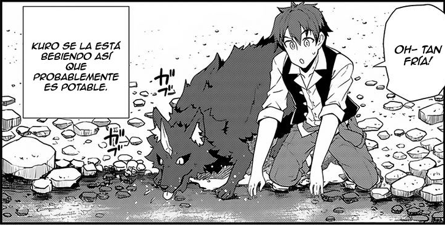

Resumen
Habiendo muerto por constante enfermedad a la edad de 39 años, Machio Hiraku tiene la oportunidad de ir a otro mundo. Cuando se le pregunta cuál es su deseo otorgado por Dios con la intención de darle fuerza, él pide tener un cuerpo sano, le ofrece un segundo deseo, elige vivir en paz, un tercer deseo de poder conocer el idioma local, y para un último deseo, ser un granjero.
Autor: Yasumo(やすも)
Ilustrador: Naitou Kinosuke (騎之介 内藤)
Comentarios
Este manga quiza nunca estara en un top normal de los mejores mangas isekai, pero hice lo posible por darle aunque sea un pequeño especio en mi top.
Machio Hiraku

Primero, nuestro protagonista en su vida anterior, le toco sufrir de muchaa enfermedad, lo cual lo tuvo en cama, practicamente toda su vida, a si que lo unico que le pidio a Dios fue salud, este no conforme le ofrece mas regalos, dandole asi ademas idioma, recistencia y una herramienta especial multi uso.
En cundo llega a este nuevo mundo, con la intencion de ser un simple granjero, se da cuenta de la utilidad de su nueva herramienta y de la increible nueva resitencia que tiene.

Ya que vivira solo decide crear una pequeña casa y un cultivo,durante su dia a dia, termina encontrando a unos lobos que parecian estar en problemas, los ayuda y estos terminan volviendose sus mascotas, las cuales a medida pasa el tiempo, crecen en poblacion.
Un dia encuentra una joven, la que seria la primera de muchos miembros que viviran en su comunidad, la cual cada vez creceria mas y mis hasta convertirse en un gigantesco pueblo con diversas y poderosas especies habitandolo.
Al leer este manga, no esperen un fabuloso manga de fantasia con batallas y aventuras, pues solo es un manga que sigue la vida "comun" de nuestro protagonista, que solo decea vivir tranquilo su dia a dia.
Si desean leer este manga lo puedes encontrar en algunos de los siguientes link: